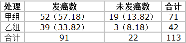

卡方检验是一种用途广泛的假设检验方法，它属于非参数检验方法。用于比较两个及两个以上样本率( 构成比）以及两个分类变量的关联性分析。思想是比较理论频数和实际频数的吻合程度。
卡方分布
设 $X_1, X_2, \dots ,X_n$ 是来自总体$N(0,1)$的样本,则称统计量
$$
\mathcal X^2=X_1^2 + X_2^2+ \dots +X_n^2
$$
服从自由度为$n$的$\chi^2$分布,记为$\mathcal X^2 \sim \chi^2(n)$ . 此处,自由度是指上式右端包含的独立变量的个数。
卡方分布的概率密度函数为：
$$
f(x;n)=
\begin{cases}
\dfrac {x^{\frac {n}{2}-1}e^{-\frac {x}{2}}}{2^{\frac {n}{2}} \Gamma (\frac {n}{2})},&x>0;\\
0,&{\text{otherwise}}.
\end{cases}
$$

卡方分布是由正态分布构造而成的一个新的分布，当自由度$n$很大时，$\chi^2$分布近似为正态分布。此时：
均值：$E(\chi^2)=n$
方差：$D(\chi^2)=2n$
分布的可加性： 若$\chi^2(n_1)$ $\chi^2(n_2)$ 互相独立，则：服从$\chi^2(n_1) + \chi^2(n_2)$ 自由度为$n1+n2$ 的 $\chi^2$ 分布。
假设检验
可以复习这篇文章假设检验。
卡方检验
卡方检验是专用于解决计数数据统计分析的假设检验法。卡方检验的两个应用：拟合性检验和独立性检验。
拟合性检验
拟合优度检验是为检验观察到的一批数据是否与某种理论分布符合，而采用的计算方法就是卡方检验法。
假设一总体$X$服从分布：
$$
H_0:P(X=a_i)=p_i; (i=1,\dots,k) \\
$$
其中: $a_i,p_i$都是已知的，且$a_1,\dots,a_k$两两各不相同，$p_i>0$.
先设想总体$X$的样本数量$n$足够大，按大数定理，若以$v_i$记$X_1,\dots,X_n$中等于$a_i$的个数，应有$v_i/n≈p_i$。我们把$np_i$称为$a_i$这个“类”的理论值，而把$v_i$称为其经验值或者观察值。如下表：
| 类别 | $a_1$ | $a_2$ | $\dots$ | $a_i$ | $\dots$ | $a_k$ |
|---|---|---|---|---|---|---|
| 理论值 | $np_1$ | $np_2$ | $\dots$ | $np_i$ | $\dots$ | $np_k$ |
| 经验值 | $v_1$ | $v_2$ | $\dots$ | $v_i$ | $\dots$ | $v_k$ |
表中最后两行的差异越小，则$H_0$越可能是对的. 为了反映这种差异,皮尔逊采用 z统计量：
$$
\begin {align}
Z &=∑\frac{(理论值−经验值)^2}{理论值} \\
&=∑_{i=1}^k \frac{(np_i−v_i)^2}{(np_i)} \sim \chi_{k-1}^2
\end {align}
$$
对公式解释分三部分：
- 理论值−经验值：反映差异;
- (理论值−经验值)^2：排除1中存在正负抵消的情况;
- (理论值−经验值)^2/理论值：针对不同“类”下值域差异过大问题，将差异转换到同种尺度内。
如果原假设$H_0$成立，则在样本大小$n \to \infty$时，$Z$的分布趋向于自由度为$k-1$的$\chi^2$分布，即$\chi_{k−1}^2$。
scipy 中提供了 chisquare 进行卡方拟合优度检查，其函数签名如下：
chisquare(f_obs, f_exp=None, ddof=0, axis=0)
f_obs : array_like
各类别的观察频率f_exp : array_like, optional
各类别的期望频率. 默认为频率相等ddof : int, optional
“Delta degrees of freedom”: adjustment to the degrees of freedom
for the p-value. The p-value is computed using a chi-squared
distribution with k - 1 - ddof degrees of freedom, where k
is the number of observed frequencies. The default value of ddof
is 0.axis : int or None, optional
The axis of the broadcast result of f_obs and f_exp along which to
apply the test. If axis is None, all values in f_obs are treated
as a single data set. Default is 0.
1 | from scipy.stats import chisquare |
独立性检验
卡方检验还可以用于检验两个或两个以上因素（各有两项或以上的分类）之间是否相互影响的问题，这种检验称为独立性检验。例如要讨论血型与性格的关系，血型有A、B、AB、O四类，性格采用心理学上的A型性格来划分，即有A型和B型两种，每个人可能是它们之间交叉所形成的8种类型中的一种，那么倒底它们之间有不有关系，就可以用卡方独立性检验。
卡方独立性检验的零假设是各因素之间相互独立。因此理论次数的计算也是基于这一假设，具体计算时，采用列联表的方式，后面将举例说明。
两组大白鼠在不同致癌剂作用下的发癌率如下表，问两组发癌率有无差别（致癌剂对大白鼠的发癌数是否会有影响）？
表中只有 52, 19, 39, 3 这四个数据是整个表中的基本资料，其余数据均由此推算出来；这四格资料表就称四格表（fourfold table），或称2行2列表（2×2 contingency table）。从该资料算出的两组发癌率分别为73.24%和92.86%，两者的差别可能是 抽样误差 所致，亦可能是 两组发癌率确有不同 。这里可通过卡方检验来验证其差异有无统计学意义（即，是否为抽样误差所致），检验的基本公式为：
$$
\chi^2 = \sum \frac {(A-T)^2}{T}
$$
其中：
- $A$ 为实际数，四格表的四个基本数据就是实际数；
- $T$ 为理论数，是根据检验假设推断出来的；理论数的计算方式如下：
- 假设这两组的发癌率相同，差别仅是由抽样误差所致
- 那么理论发癌率为两组合计发癌率，即 $91 \div 113=80.3 \% $
- 以此为依据便可推算出四格表中相应的四格的理论数
卡方独立性检验的步骤如下：
建立假设，确定显著性水平 $\alpha$：
H0: 两组的发癌率相同
H1:两组的发癌率不同
$\alpha = 0.05$
计算理论数，计算公式为：
根据 H0 假设，理论发癌率为 $91 \div 113=80.3 \% $ .
则 四格表中的真实发癌数 分别为：
第1行1列： $71 \times 80.3 \%=57.18$
第1行2列： $71 \times (1-80.3 \%)=13.82$
第2行1列： $42 \times 80.3 \%=33.82$
第2行2列： $42 \times (1-80.3 \%)=8.18$
即得到如下四格表，其中括号里面为理论发癌数。

计算卡方值按公式代入
$$
\begin {align}
\chi^2 &= \sum \frac {(A-T)^2}{T} \\
&= \frac {(52-57.18)^2}{57.18} + \frac {(19-13.82)^2}{13.82} + \frac {(39-33.82)^2}{33.82} + \frac {(3-8.18)^2}{8.18} \\
&=0.47+1.94+0.79+3.28 \\
&=6.48
\end {align}
$$查卡方值表求$P$值
本例中卡方检验的自由度为 n=（行数-1）（列数-1）
查卡方界值表，找到 $\chi_{0.05}^2(1) = 3.84$
由于 $6.48 \gt \chi_{0.05}^2(1) = 3.84 $ 所以 $P < 0.05$
所以拒绝原假设 H0，接受备择假设 H1。差异有显著统计学意义， 即，两组的发癌率不同。（不明白的话，可以去复习假设检验的相关知识）
scipy 中提供了 基于 contingency table （四格表）进行$chi^2$独立性检验的函数，
1 | import numpy as np |
卡方检验用于特征选择
用卡方检验做特征选择更好的是应用于分类问题。 特征选择的假设为：如果一个特征与个类别相互独立，则认为这个特征不好，反之，如果一个特征与类别相关，则认为这个特征比较好。在这种场景下，我们的检验检验问题可以定义为：
$$
\begin {align}
& H_0: \text{变量与类别相互独立} \\
& H_1: \text{变量与类别相关}
\end {align}
$$
可以将该方法理解为拟合性检验问题。如对于一个特征来说，其中观察值为各类别中该特征的值之和（分类数量=观察值数量=理论值数量），理论值为各类别在总样本量中所占的比例 乘以 该特征值只和。可以参考sklearn中函数chi2的代码chi2
那么 $\chi^2$ 统计量越大 或者 p-value 越小 则变量与类别越相关，越时一个应该被选用的特征。
此处我们可以不定义显著性水平，因为我们的目标一般时从若干个变量中 k 个相关性好的特征，我们只需要按照 $\chi^2$ 统计量或者 p-value 的大小关系选择最好的 k 个变量即可。
在 sklearn 中提供了这个功能：
1 | from sklearn.feature_selection import chi2 |
上面的结果中 第一行 为4个特征对应的 $\chi^2$ 统计量, 第二行为 p-value。
还可以和 SelectKBest 一起使用，直接选择 k个最好的特征。 下面的例子是从64个特征中选择20个特征
1 | from sklearn.datasets import load_digits |
卡方检验用于特征离散化
在评分卡模型中需要对连续特征进行分箱/离散化，就可以采用卡方检验方法进行离散化。
具体方法见我的代码和blog(目前不公开)。